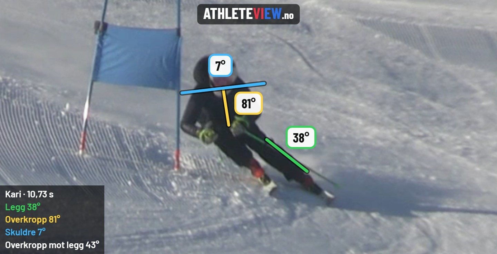

A
← dra →
B
← dra →
Velg hastighet

På PC: slipp videofiler rett på feltene. Mellomrom spiller av, piltastene flytter ett bilde, dobbeltklikk på en video forstørrer den.
Ghost: Løper B legges inn i bildet til A, der B faktisk var i løypa i samme øyeblikk, og bildet zoomer inn på løperne. Begge videoene må være filmet fra samme sted, og startpunktet bør settes i starten. Før analysen trykker du på løper A og løper B i startbildet. Med linjer tegnes sporet etter skiene til A (rød) og B (blå) de siste 3 sekundene. Det tar gjerne 1–2 minutter. Alt skjer på enheten din, ingenting lastes opp.
Videoen lages fra startpunktet i valgt hastighet, vanligvis på noen sekunder. La siden være åpen til den er ferdig. Alt skjer på telefonen din, ingenting lastes opp.
Det kan være flere løpere i bildet. Trykk på løperen som skal analyseres, så følger ghosten og linjene riktig person. Du kan ikke gå videre før både A og B er bekreftet.
Legg, overkropp og skuldre måles mot det vannrette i bildet. Hold telefonen rett når du filmer. «Overkropp mot legg» påvirkes ikke av hvordan telefonen holdes.
Analysen skjer på enheten din, og ingen video eller bilder lastes opp. Første gang lastes en analysemodell ned (ca. 17 MB).
Volum er utviklet for trenere og lag som ønsker å effektivisere filming og bruk av videoer mot løpere. Tjenesten fungerer kun på pc, fordi den er knyttet til mappestruktur på pc.
Film tradisjonelt med håndholdt kamera. Si navnet på løperen tydelig i starten av opptaket. Stå nær kameraet når du sier navnet, eller bruk en trådløs mikrofon. Kjør videofilene gjennom Volum i etterkant, og få løpernavn på videofilene og løpermapper automatisk opprettet. Videofilmer med zooming, panorering og ustødighet vil ikke fungere så bra for å lage ghost og linjeanalyser, under tjenesten Dobbel.
Film en sektor, komfortabelt, og lag mer avanserte analysevideoer. Med presist og likt videomateriale kan videofilene benyttes til å lage ghost videoer med linjer i tjenesten Dobbel, og fremover AI-analyser.
Tips om avansert videofilming for å lage ghost videoer med linjer
Gå til mappen med videoene, og merk alle (Ctrl+A) eller bare de du vil ha med. De vises i lista nederst.
For hver video lagres også «… zoom.mp4», der utsnittet følger løperen og zoomer rolig inn. Det virker best med 4K filmet fra stativ, uten zoom og panorering. Originalen lagres som før, og det er den du bruker i Dobbel med ghost og linjer. Første gang markerer du løypa på et bilde fra videoen. Athleteview ser selv når kameraet er flyttet til et nytt sted, og ber deg da markere løypa på nytt. Den zoomede kopien har ikke lyd.
Athleteview lytter etter løpernavnet i starten av hver video, og lager zoomkopiene ved avansert filming.
Talegjenkjenningen skjer på enheten din, og ingen video eller lyd lastes opp. Første gang lastes en talemodell ned (ca. 80 MB). Etter det er den lagret i nettleseren.
Sjekk navnene i lista under, og trykk «Lagre videoer». Da velger du mappen. Der lagres en kopi av hver video med løpernavn, og zoomkopien ved avansert filming. Originalene blir ikke endret.